初めてタイを訪れた時からコレがず～っと気になっていた。
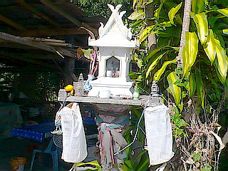 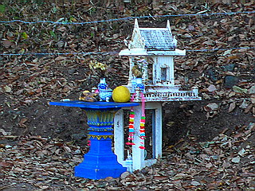
庭先や街角にある小さな祠だ。
タイを訪れた方なら一度は目にした事があるかと思うが、人の多く集まる場所やホテルやレストランの店先、民家の庭先、およそタイ人のいるところに必ずある、逆に余程の山の中にでも行かない限り見ない日はないといってもいいほどの頻度でこの小さな祠はある。
一見、鳥カゴにも見えるがタイの人々の間で信じられている精霊を祀る祠なのだ。
つまり仏教とは別の民間信仰ということ。
で、今回の旅でもあちこちでこの祠を見かけたのでいくつか記録しておいた。
こちらはコーンケンで泊まったホテルの敷地内にあった祠。
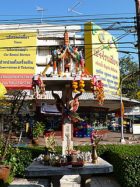 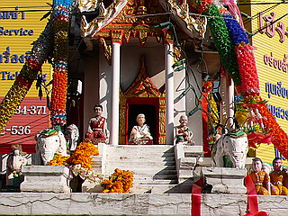
まるでお寺のミニチュアのような小さな祠。
一本足で支えられている。
このような形式の祠をサンプラプームというらしい。
柱の元には線香や花が供えられている。実際通りがかりの地元の人やホテルの従業員などがしょっちゅう参拝をしていた。
祠の前には老夫婦の人形がある。
これまでにも何度か見かけたことがあるが、神様だったんですね…
特筆すべきはその奉納される小さい人形の数の多さである。
寺院型の祠の周りや柱の元に無数の小さな人形が密集している。
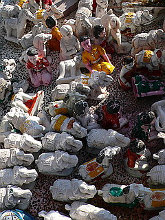
象、馬などが多い。、そして気になるのは何故かオールバックの男が多く奉納されている。
誰だコイツ…と言いたいところだが、きっと偉い神様に違いないのでコメントは差し控えさせていただきます。
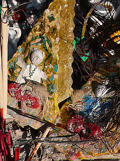
香炉の裏には手作り感ムンムンの男女の神様が奉納されていた。
こちらはウドンターニのバスターミナルにあったサンプラプーム
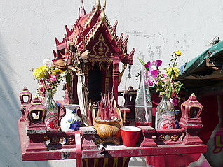
チョット荒れた感じだが花は枯れてないし線香もぎっしり刺さっている。
何といっても花瓶がソーダのビン（メコンウィスキーをこれで割って飲むんだな）、お供え物がジュースというのが渋い。
しかもちゃんとストローまでさしてあるし。
こちらは同じくウドンターニーの慶安寺で見かけたサンプラプーム。
仏教寺院の、しかも中国寺院の中にすら精霊を祀るこの祠があるのだ。
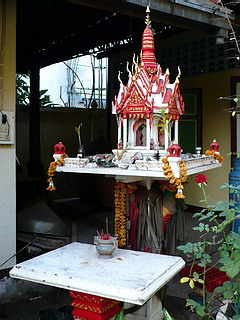
タイの信仰風土の中で仏教と共に大きなウエイトを占めているといわざるを得ない。
で、次にこのタイプ。
サンジャオというそうな。
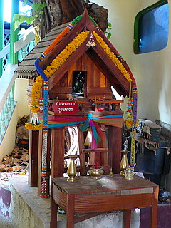
これもサンプラプーム同様、民家の庭先や店の前、寺院の中、ホテルの中庭などなどあちこちで見かける。
サンプラプームと一緒に設置されているケースも多いようだ。
これは土地の神様を祀っているもので、まさに家型。というか伝統的な民家そのもののカタチをしている。
それこそ鳥小屋と間違えやすいが、その土地ごとのありがた～い神様を祀っているのでご注意願いたい。
一般的にこちらは高床式の家で机のように4本脚になっているのが基本形だ。
道教でも土地公というそれぞれの土地で祀られる神様がいるが、感覚的にはそれに近い神様なのだろうか。
↓コレはチェンマイのショッピングセンターの中庭にあったサンジャオ。
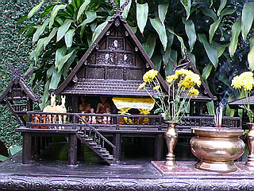
さすがに民家の庭先にあるものよりゴージャスかつ大規模だ。
この辺になると精巧な造りになっていて祀るサイドの本気具合が感じられる。
家のなかには例の老夫婦の人形が置かれている。
勿論線香と花が供えられている。
そういえばベトナムでも似たような祠をよく見かけた。
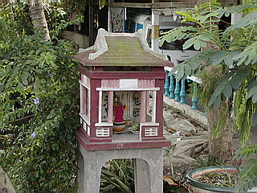
ロケ地；ベトナム
調べてみるとこの路傍の祠はベトナム～タイ辺りに分布している信仰形態のようで、タイから南下してマレーシアに行くとあまり見られないそうだ。
不思議なもので同じ仏教でもベトナムは大乗仏教、タイは南方上座部仏教とそれぞれ宗教的バックボーンが違うのだが、こと民間信仰レベルでは非常に良く似た習俗を共有している。
タイの信仰風景も一皮剥けば様々なファクターが重層的に重なり合っている、ということなんでしょう。
ウドンターニーのワットポーチャイシー境内にもサンジャオがあった。
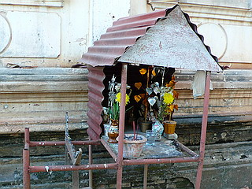 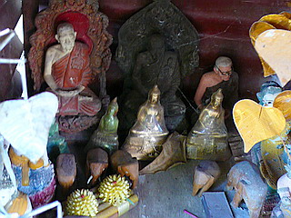
…かなりいい加減な家だが、まあ、人間だって豪邸に住んでいる人もいればトタンのバラックに住んでいる人もいて、みんな違ってみんないい（ｂｙみすゞ）ってことで。
サンジャオの中には仏サマ、お坊さん、象さんなどが埃を被っていた。
一方こちらはサンプラブラーム。コーンケンにて。
サンプラプームに名前が似ていてややこしいがご勘弁を。
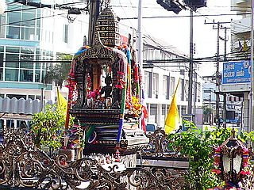
こちらは中央にブラフマンという四面の神を祀ってある。
このお方、ヒンドゥーの神サマなのに何故かタイでは大人気で、バンコクの有名なエラワンプームもこのタイプである。
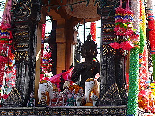
見ているこっちが恥ずかしくなるくらいの立派な柵に囲まれている。
一般的にサンプラプームやサンジャオに比べて立派な造りのものが多いようだ。
こちらのブラフマンの方が人々に支持されている（願い事がかなう）、という事なのだろう。
ただしサンプラプームよりも数自体は少ない。
どちらかというと大きな会社やホテル、街の中心部などでよく見られ、個人の家の庭先や小さな食堂の店先などには無かった…ような気がします。
ちなみにこのブラフマン、何故か中華圏でも四面佛という名で人気がある。仏じゃないのに…
で、ハナシをコーンケンのサンプラブラームに戻す。
こちらも祠の前にたくさんの人形が奉納されている。
こちらはいわゆる古典舞踊の際の衣装を身に着けている人形が多かった。
赤銀のツートンカラーなので遠目に見るとやけにウルトラマンっぽい。
祠の種類によって奉納する人形の種類が決まっていたりするんだろうか？勉強不足でよくわかりません。
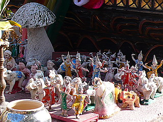
やっぱりキノコは男根奉納の一種なのか？
この様にタイ人の民間信仰はヒンドゥー教、バラモン教から道教あたりまでの宗教、民間信仰が複雑にリミックスされており、それらが渾然一体となって出来上がっている、んだと思う。多分。
なのでこれからは「タイは仏教の国である」と簡単に言い切ることは慎みたい。
せめて「仏教」の前後に0.5秒程の間を空けるようにしたいものである。
このような祠、特にサンプラプームやサンジャオはよく街道沿いで売られているのを見かける。
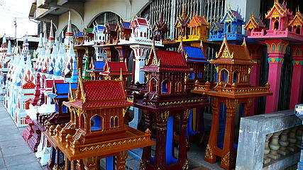
手前の4本脚の小屋がサンジャオ、後に並んでいる1本脚の祠がサンプラプーム。
この手のショップには他にもコンクリの動物などが置かれていて、かなりハッピーな空間に仕上がっている。
こんなきらびやかな塔も売られている↓。お坊さんや高貴な人のお墓である。
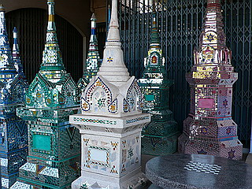
これらの祠、以下のように大まかに3つに分類する事が出来るかと思う。
呼 称 形 状 基 壇 部 備 考 サンプラプーム 塔が付いている寺院風祠 一本足 精霊を祀っている サンジャオ 民家型祠 四本足 土地神を祀っている サンプラブラーム 猫足椅子のような祠 台座 四面仏を祀っている
…これはあくまでも私の曖昧な記憶と数少ないサンプルから判断したかなりアバウトな分類である。
しかも呼称の中には酔っぱらったタイ人に聞いたものもある、というか今書いている私が酒ガブガブ飲みながらやってますんで、、あくまでも参考程度に留めていただきたい、と。
ま、いつものことですけどこのサイトに記されている内容はいい加減な記憶と主観と勘違いによって構成されているので話半分位の塩梅で読んでくださいね。
と、いうわけでここからが本題です。
私がこれらの祠を見ていつも気になっていたのは、引越しの際サンプラプームやサンジャオはどうしているのか、という点。
特にサンジャオは土地神である。ということは新しい場所に引っ越したら新しい土地神を祀らねばならないのだろう。
引越しならば新居に移動するという手もあるだろうが、例えば住んでいる人が亡くなって住まい共々祠も必要なくなった場合、その祠はどこへ行っちゃうのだろうか？
その答えをこの度、偶然発見したのである。
場所はチェンマイの郊外、というか山の中。
丁度山道の峠付近にこのような光景が広がっていた。
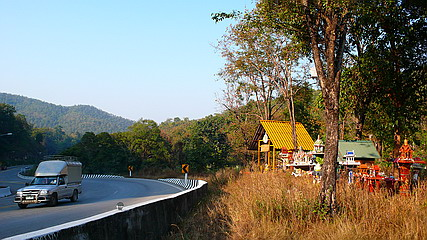
色とりどりのたくさんの祠が密集しているのだ。
最初は村の人達が共同で祠を奉納しているのかと思ったが、近くに人の住んでいる様子は全くない。
様々な事情があるのだろうが、必要なくなった祠が一箇所に集められているのである。
…これは祠の墓場なのだろう。
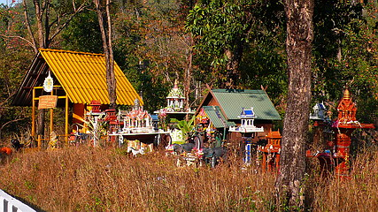
大小様々な祠が軒を連ねまるで神様のミニチュアタウンのようだ。
その街は棄てられた神様のゴーストタウンなのだが。
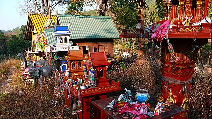
サンプラプームとサンジャオばかりでサンプラブラームは少なかった。
見れば新品同様のもの、激しく破損しているもの、柱と台座が外れているものなど、状態は様々だ。
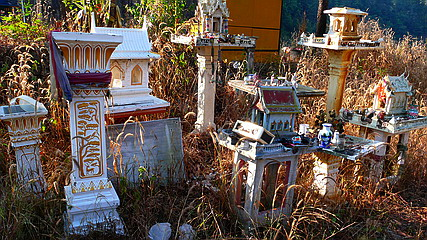
何故かトタン屋根の大きな祠があった。これはさすがにどこかから移転してきたのではなく新築されたものなのだろう。
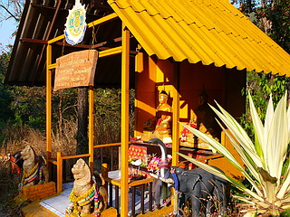
かつて土地神の家であったサンジャオも御主人様がいなくなればこの通り。
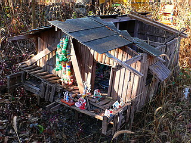
一見寂しさ満点のゴーストタウンだが、良く見ると一個一個の祠にプアンマライ（お寺などに参拝する際あげる花飾り）が掛けられていて、完全に遺棄されているのではない事がわかる。
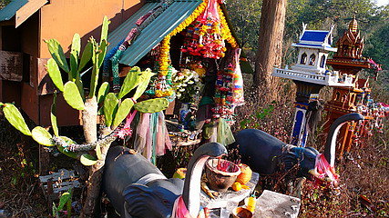
もっともプアンマライも造花で出来ており、頻繁に面倒を見ている様子はないが。
…と思ったら中央にある祠には生花が活けてあり、線香もあがっている。
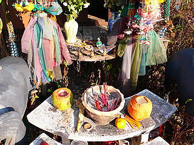
これはどういう事なのだろう。
もしかしたら祠を手放した人の代わりに近在の人がたまに来て線香を手向けているのかもしれない。
いくら不要になった神様とはいえ粗末にするとバチがあたる、という考え方は日本もタイも変わらないのだろう。
特に精霊は人を守るが怒らせると恐い祟り神だという。
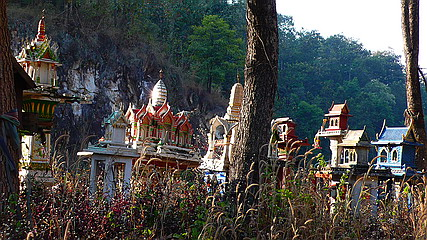
人の都合で祀られたり棄てられたり。
神様稼業も楽じゃないですね。
泰国珍寺修行 北へ おしまい